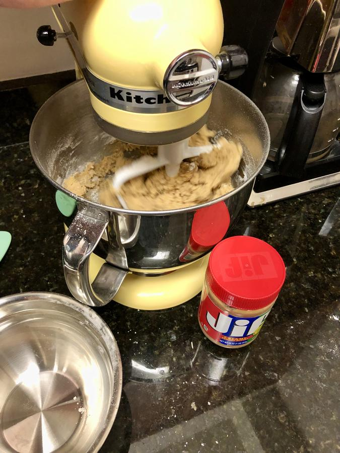

Based on https://www.simplyrecipes.com/recipes/peanut_butter_cookies/
Personal rating: 5 / 5

1/2 cup butter, room temperature
1/2 cup granulated sugar
1/2 cup packed brown sugar
1/2 cup peanut butter
1 large egg
1.25 cups flour
3/4 tsp baking soda
1/2 tsp baking powder
1/4 tsp salt